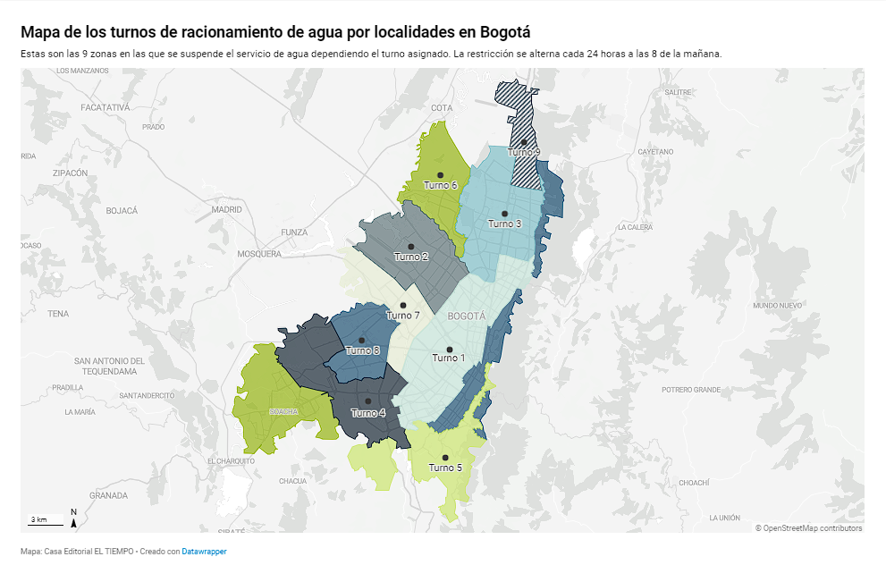
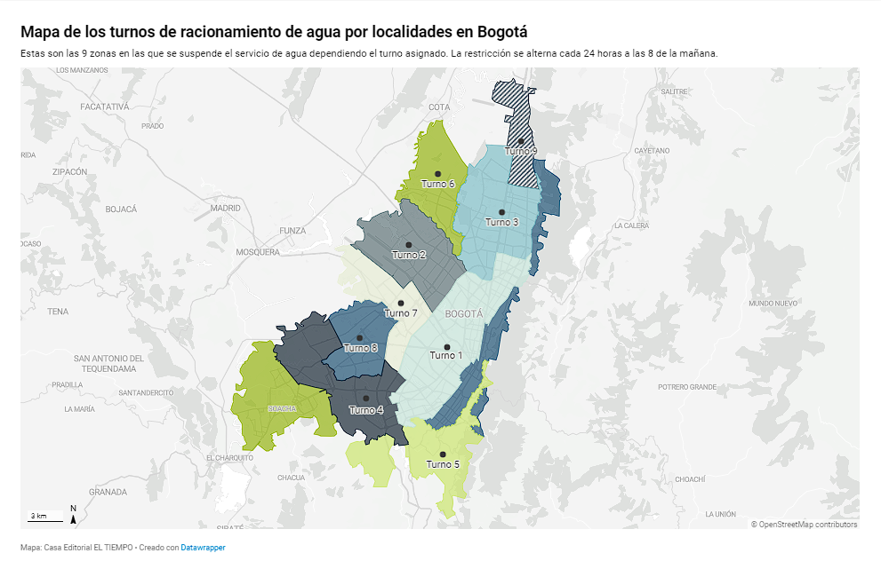

Racionamiento en Bogotá
Última actualización: 22 de abril de 2024. Consulta aquí el calendario actualizado para Bogotá.
informacion sacada de marca.com racionamiento de agua 2024
Última actualización: 22 de abril de 2024. Consulta aquí el calendario actualizado para Bogotá.
informacion sacada de marca.com racionamiento de agua 2024
